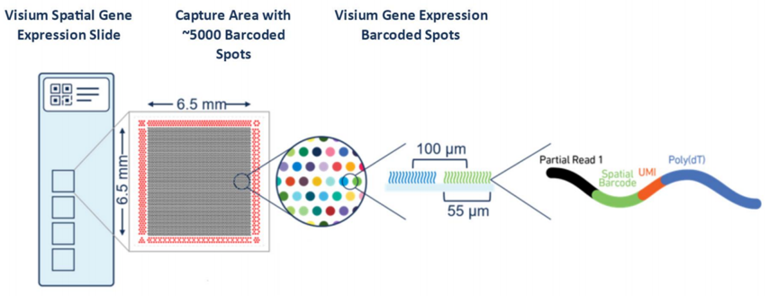
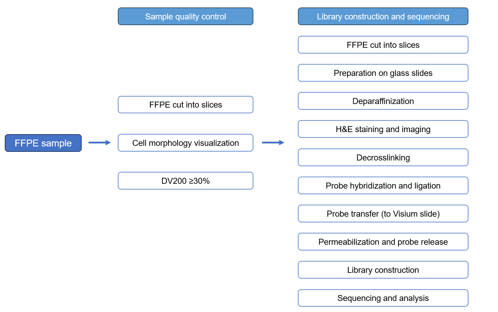

Novogene 10X Visium Spatial Quality control analysis report
| Contract information | Contract content |
|---|---|
| Contract ID | X101SC2401xxxx-Z01 |
| Contract name | Mouse Brain FFPE cytassist Visium analysis |
| Report time | 2024-01-22 |
| Batch ID | X101SC2401xxxx-Z01-J001 |
1 Experimental Procedure
10x Genomics’ VisiumTM Spatial transcriptomics is an unbiased detection of gene expression based on complete tissue sections. This technique preserves the morphological information of samples by performing H&E staining and capturing images of tissue slices placed in specific capture regions on slides. Subsequently, the same sample undergoes permeabilization, allowing the release of RNA, which hybridizes with oligonucleotide probes in the capture region, marking different spots with spatial barcodes. The 10x Visium Spatial transcriptomics can combine the morphological details and gene expression information to present the spatial transcriptomic atlas of the tissue. The core of this technology lies in spatial barcode slides, and the specific principles of the technique are demonstrated as follows：

Figure 1.1 Principle of Visium Spatial Gene Expression technology. In a 6.5 mm x 6.5 mm area, there are nearly 5000 spots, with each spot containing millions of spatial barcode capture probes. DNA probes, including Illumina sequencing primer sequences, spatial barcodes, UMIs, and poly(dT), with a diameter of 55 micrometers, are anchored at the 5' end on the slide. The spatial barcode sequence of each spot is unique, capable of capturing RNA from 1 to 10 cells.
The 10x Visium Spatial Transcriptomics technology supports both fresh-frozen tissues and samples embedded in formalin-fixed paraffin (FFPE). The Visium CytAssist FFPE Spatial Transcriptomics workflow includes processes such as FFPE sample preparation, staining, imaging, probe hybridization, probe ligation, slide transfer, spatial position marking, library construction, sequencing, data visualization and other steps. To ensure the accuracy and reliability of the sequencing data, Novogene commits to strict quality control at every stage, guaranteeing the production of high quality data. The overall experimental workflow for 10x Genomics Visium FFPE Spatial Transcriptomics is illustrated in the diagram below:

1.1 Sample QC
The species currently eligible for CytAssist Spatial Transcriptomic on FFPE samples include humans and mice. For FFPE samples used in spatial transcriptomics studies, it is advisable to avoid excessively long storage periods, and transportation via ice packs or dry ice is preferable. Regarding the quality control of FFPE samples, a small number of paraffin sections are collected for RNA extraction, and the DV200 quality index is assessed by Agilent 2100. DV200 represents the percentage of RNA fragments longer than 200nt. The DV200 value is correlated with factors such as tissue type (e.g., diseased or necrotic tissue), FFPE sample preparation and processing, and storage duration, indirectly characterizing the quality of RNA in FFPE samples. It is recommended that FFPE samples with a DV200 value higher than 30% can be used for the library construction of CytAssist spatial transcriptomics.
1.2 Capture principle
In contrast to the capture principle of spatial transcriptomics in fresh frozen tissue, FFPE samples involve capturing mRNA targets with two specific probes of 25nt length each. One probe (RHS) has a synthetic polyA tail structure at one end, designed for capture, while the other segment (LHS) is designed with the TruSeq Read2 sequence for library construction and sequencing (as shown in the diagram below). The ligated capture probes are placed on the Visium slide. Currently, 10x Genomics has designed specific capture probes for human and mouse transcriptomes,enabling spatial transcriptome studies at the whole transcriptome level.

1.3 Library construction
The library construction process starts with preparing the tissue slices placed on standard glass slides, including slicing, glass slide mounting, fixation, deparaffinization, H&E staining and imaging. The CytAssist probe pairs are added to the decrosslinked tissues and hybridize to their complementary target RNA. When both probe pairs bind to their adjacent target sites, they are ligated together. The subsequent steps which are performed upon transfer from glass slides to Visium slides are: and probe release, probe extension and tube transfer. The last steps, which are wash-out of barcoding probes, PCR amplification and library construction happen outside the instrument. Once the library passes the quality control, it proceeds to sequencing. The library construction process is illustrated as follows (figure from 10X Genomics – Spatial Gene Expression for FFPE Product sheet):

1.4 Sequencing
For 10x Spatial Transcriptomics libraries, such as those from FFPE samples, it is recommended to sequence at least 25,000 read pairs per spot. The sequencing depth is influenced by factors such as the coverage area of the captured region on the slide, sample type and complexity. Increasing the sequencing data volume could improve the gene detection rates. It is suggested to aim for a sequencing data volume in the range of 10 to 20 Gb when using PE50 sequencing strategy, and 50 Gb when using PE150
The Visium slide information which was used to do library construction is as follow：
| Sample name | Slide ID | Capture area |
|---|---|---|
| Brain1 | V42A20-353 | A1 |

2 Raw data QC
2.1 Explanation of raw sequencing data
High throughput sequencing data generates raw image files that are converted into sequencing reads through base calling using Bcl2fastq. These sequences are stored in FASTQ format. FASTQ is a common text format for storing both the nucleotide sequence and the corresponding quality scores. Taking Illumina NovaSeq PE150 sequencing data as an example, where both reads are 150 bp long, for 10x Spatial Transcriptomic libraries, the first 28 bp of read1 contain spatial barcode and UMI information. This information is crucial for distinguishing from which spot read2 originates. Bases after the initial 28 bp are non-informative data, while all of read2 is useful data.
Each read in a FASTQ file consists of four lines of descriptive information, as shown below:
@ST-E00310:278:HF3GJALXX:5:1101:6745:1924 1:N:0:ACGCTCGA
TNTAGATCTTAGGCGGTTGGTGTAGGTATCGACACAGGTCTTCATTTTGGCTAATAATGTACCAACGGAAGTCTGACATTCTGACTGTTCTTCTTCCTCTTCTTCCCCATTCTCTGTAGAAAGAGGCAACAACAGCGGCACCATAGATGT
+
F#FFFFFFFFFFFFFFFFFFFFFFFFFFFFFFFFFFFFFF:FFFFF:FFFFFFFFFFFFFFFFFFFFFFFFFFFFFFFFFF:FFFFFFFFFFFFFFFFFFFFFFFFFFF:FFFF:FFFFF:FFFFFFFFFFFFFFFFFFFFF,FFFFFFF
The first line starts with ”@”, contains Illumina sequencing identifier and descriptive text. The second line represents the nucleotide sequence of the sequencing fragment. The third line optionally starts with “+” or can be empty. The fourth line represents the sequencing quality scores for each corresponding base in ASCII-encoded format. Each character’s ASCII value minus 33 equals the sequencing quality score for the respective base.

2.2 Sequencing data quality control
Massive amounts of data can be generated through sequencing, and ensuring the quality of this data is essential for subsequent data analysis. Therefore, the first step in data analysis is to perform quality control (QC) of the raw data. Basic statistics on the raw reads are conducted with fqstate. Raw data is named according to the sample name followed by a numerical order (e.g., sample name-1, sample name-2, sample name-3…), based on index, lane or sequencing time.
Figure 2.1 Raw data QC
Top left: Cumulative distribution of data quality statistics; Top right: Distribution of base content across reads
Bottom left: Distribution of sequencing quality scores across sequencing cycles; Bottom right: Distribution of sequencing error rates across sequencing cycles

2.3 Sequencing data summary
Data quality directly impacts the results of subsequent analysis. Here is a summary of the quality and output of the raw data:
| Sample | Index | Total_reads | Total_bases (G) | Error_rate (%) | Q20 (%) | Q30 (%) | Q30_read2 (%) | GC (%) |
|---|---|---|---|---|---|---|---|---|
| Brain1 | Brain1-1 | 97134459 | 19.2 | 0.0 | 98.44 | 95.94 | 97.59 | 41.00 |
| Brain1-2 | 94663591 | 0.0 | 98.27 | 95.41 | 97.28 | 41.01 |
(1) Sample：Sample name
(2) Index：Raw data identifier
(3) Total_reads：Number of read pairs in the raw data
(4) Total_bases (G): Number of bases in the raw data (in gigabases)
(5) Error_rate (%): Percentage of N bases in the raw data
(6) Q20 (%)：Percentage of bases with Phred scores greater than 20 in the raw data.
(7) Q30 (%)：Percentage of bases with Phred scores greater than 30 in the raw data.
(8) Q30_read2 (%)：Q30 percentage for Read2 sequencing data (used for aligning to the reference genome in spatial transcriptomics or single-cell RNA-seq)
(9) GC (%)：Percentage of G and C bases in clean reads out of the four bases